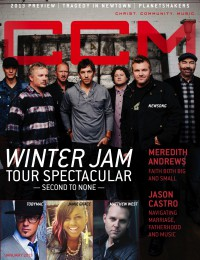

CCM Digital, Jan 2013
| Cover |
|---|
|  |
 Online Exclusively Online Exclusively |
| Writers in this Issue |
| Argyrakis, Andy Aspinwall, Grace S. Birdsong, Toni Colville, Cindy Wilt Conner, Matt Durbin, Emily Greer, Andrew Lusk, Caroline Siler, Steve Tasker, Nathan |
NewSong & Winter Jam
Cover Feature:- "Winter Jam Tour Spectacular: Second to None" by Caroline LuskNewSong, Winter Jam tour
- "Swallow the Ocean"
- "On the Horizon" by Caroline Lusk
- "Willing and Ready" by Caroline Lusk
- "Mountain Climber" by Andy Argyrakis
- "The Long Winter"
- "Feeling the Rumble: Resounding Worship" by Emily Durbin
- "Still Believing" by Emily Durbin
- "Whom Shall I Fear"
- Wovenhand by Matt Conner
- "Donald Lawrence" by Andrew Greer
- Ronnie Freeman by Matt Conner
- Hearts of Saints by Andy Argyrakis
- "Freedom at Last: Music Sets the Captives Free" by Matt Conner
- "Unspeakable: The Tragedy in Newtown Leaves a Nation Stunned, Heartbroken and Seeking" by Caroline Lusk
- Capital Kings by Andy Argyrakis
- The Royal Royal
- "Plato Had It Right!" by Steve Siler
- Skillet, John Cooper interviewed
Reviews & New Releases:
- Chris Tomlin - Burning Lights by Andy Argyrakis
- Brian Doerksen - Ultimate Collection by Grace S. Aspinwall
- Bethel Music - For the Sake of the World by Andrew Greer
- Gateway Worship - Forever Yours by Grace S. Aspinwall
- Meredith Andrews - Worth It All by Andy Argyrakis
- Jason Castro - Only a Mountain by Grace S. Aspinwall
- Tyrus Morgan - Straight Line by Grace S. Aspinwall
- Disciple - O, God Save Us All by Matt Conner
- Further Seems Forever - Penny Black by Matt Conner
- Love and Death - Between Here and Lost by Matt Conner
- Andrew Blahnik - Blank Pages by Matt Conner
- Currents - Spirit & Truth by Matt Conner
- Collin Raye - Never Gonna Stand For This by Andy Argyrakis
- John P. Kee - Life & Favor by Andrew Greer
- various artists - WOW Gospel the 90's by Andrew Greer
- Troy Sneed - All Is Well by Andrew Greer
- Whitney Houston - I Will Always Love You: The Best of Whitney Houston by Andy Argyrakis
- Bob Dylan - Tempest by Andy Argyrakis
- Jackie Evancho - Songs From the Silver Screen by Andy Argyrakis
- "Reunion Weekend, Riviera Theatre, Chicago, IL" by Andy Argyrakis
- "Take Time to Grieve" by Toni Birdsong
- "Here's to New Beginnings..." by Nathan Tasker
- "A Songwriter's Plight" by Cindy Wilt Colville
© 2011 CMnexus. Last updated April 2021. Contact: editor -AT- cmnexus -DØT- org About